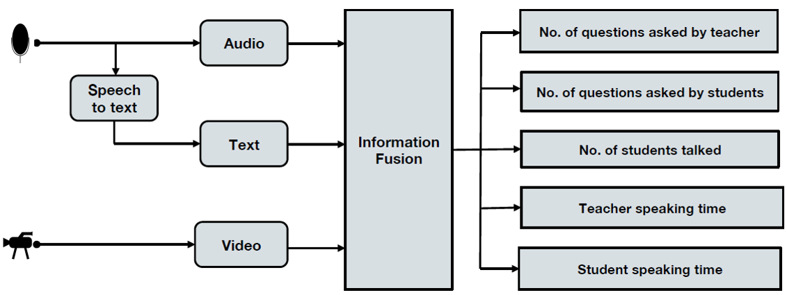
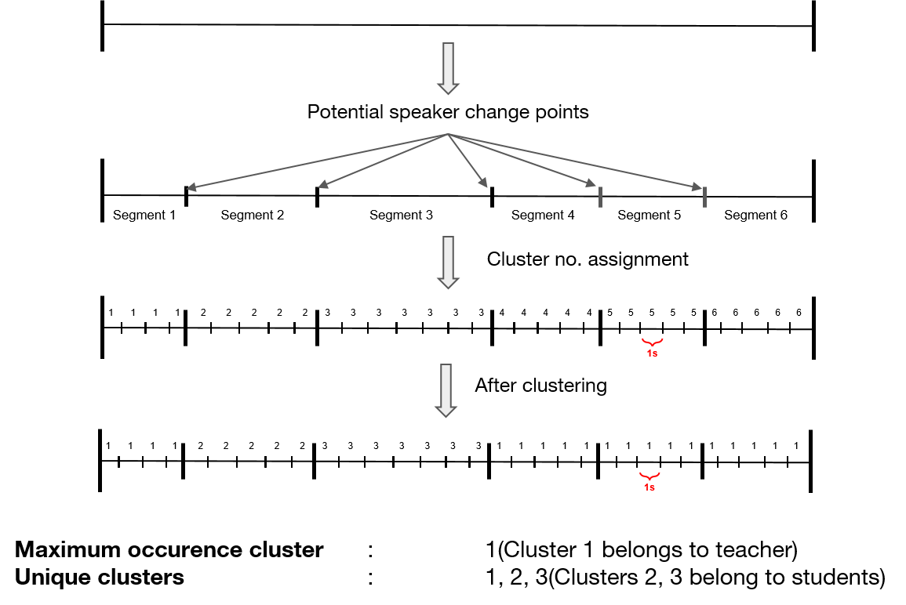
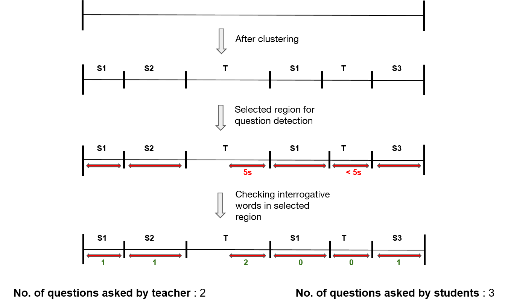

PASS : Professor Assistance with Automatic Lecture Profiling

Figure 1: Overview of PASS
In this paper, we propose a multimedia framework for automatic
teaching feedback to the teachers. We employ audio, video, and text
analysis to derive a set of attributes that quantify the interaction
between student and teacher. The feedback is very critical for the
teachers to improve their pedagogy. In the literature, there have
been works on measuring the state of students in a classroom,
such as alertness level and interest; however, to the best of our
knowledge, there are no works on quantifying student-teacher
interaction. Since the proposed method is completely automatic, it
also addresses the limitation of manual students feedback which is
limited to once or twice per semester. We have build a prototype
systems to demonstrate the framework. Experimental results on
real classroom scenario show promising results.
Current student feedback systems have the following limitations:
- Coarse feedback: Students rate overall quality of the lecture, they are not able to give feedback individual aspects of lecture such as student participation, amount of interaction.
- Lack of data: It is not necessary that all students will give you feedback, here you may lack in getting all required survey data.
- Biases: Even after making feedback form a compulsion for each student, they may not give you unbiased feedback. Generally students don't want to give feedback by answering some question.
- Scalability: You cannot take feedback anytime, it is infeasible for students to fll feedback form more frequently.
- Wrong observation: A student's judgmental perspective may
be wrong. He may consider a good teacher as bad due to
some personal or individual problem and may give negative
feedback that may lead overall down rating of teacher.
PASS : Professor Assistance System
In this section we describe details of proposed feedback system.
An overview of the PASS framework is shown in Fig 1. We place a
smartphone in the center of the classroom and record audio and
video. While audio records voice of students as well as teacher, the
video only records teacher's actions. The goal of audio and video
analysis is to measure the interaction attributes. These attributes
are measured at different stages of the framework. Total interaction time is also measured in later sections, student and teaching time are separated and finally number of questions is determined in question detection section. We also report the performance of individual steps in this section. All the tests and experiments reported in this
section are conducted on real classroom data.
Pre-processing
In order to come up with desirable and valuable feedback system,
pre-processing of audio plays a crucial role in it. For our audio
dataset we had two preprocessing steps : (1) Noise removal (2)
Silence detection and removal. Silence detection and removal also
provides total interaction time during the lecture, i.e., the total
talking time of teacher as well as student.
Noise Removal
The real time audio clip has surrounding
noise and other unavoidable classroom noises like those of fans and ACs. We suppressed the ambient noises of classroom using ClearRecord App . It uses ambient noise reduction technique torecord
conversational in harsh noisy environments.
Silence Detection and Removal
Under this preprocessing
phase, we removed the silence from the audio signals using various
techniques namely Zero crossing rate (ZCR) and Short Term Energy
(STE). Apart from the standard silence removal procedures
we also used DetectVoiced method. The algorithm
uses two audio features: energy and the spectral centroid. Then it
applies threshold to remove segments containing silence. Given
below is brief details of the silence detection and removal method
considered.
- Zero Crossing Rate(ZCR) : A running sample window size
of 50 ms was moved over the audio signal, with 50% overlab
between consecutive windows . We calculated the average
ZCR for each sample window using below equation:
$$Z(i) = \frac{1}{2W_{L}} \sum_{n=1}^{W_{L}} \left | sgn [x_{i}(n)] - sgn [x_{i}(n-1)] \right|$$
where Z(i) is ZCR of ith window and WL is the window length. Here sgn() is defined as :
$$sgn[x_{i}(n)] = \begin{cases}
1, & \text{if $x_{i}(n)>=0$}.\\
-1, & \text{otherwise}.
\end{cases}$$
- Short Term Energy(STE) : Similarly, for STE we used a
running window of 50ms with 50% overlap as given below:
$$E(i) = \frac{1}{W_{L}} \sum_{n=1}^{W_{L}}\left | x_{i}(n) \right |^{2}$$
where E(i) is the energy of the ith window. A thresholding
parameter was used to classify each window as silence or
non-silence. Usually silence window has lower STE value
than voice.
- DetectVoiced : The algorithm uses two features namely short
term energy and spectral centroid. This algorithm is based on
thresholding. First we compute the histogram of the feature
values then we apply median flter on the histogram for
smoothing. We fnd the local maxima of the histogram. The
threshold value is calculated using the frst and second local
maxima value. In this way, we get two thresholds - one based
on the short term energy and another based on spectral
centroid. Only those segments are selected whose feature
values are greater than these two thresholds.
The comparison among outputs of the ZCR, STE and DetectVoiced
silence detection and removal method is as shown in table below. By
listening each output, we compared it with orignal audio clip. The
putput of ZCR and DetectVoiced methods were found to be of
good quality, however STE based method performed poorly. We
observed that the audio voices were overlapping in case of STE.
Though there are many methods for detecting silence in an audio but no method can guarantee a 100% silence removal. These silence removal/detection procedures often result in trimming of the speech data. In case of ZCR, there were many segments which were still prevailing silence. Therefore, the DetectVoiced generated results which were chosen in the framework.
A comparison of final audio length after applying
various silence detection and removal techniques. Original
audio length is displayed under column " Time Length "
| Audio Files |
Time Length |
ZCR |
STE |
DetectVoiced |
| Audio 1 |
1m : 54s |
1m : 46s |
54s |
1m : 23s |
| Audio 2 |
2m : 10s |
1m : 48s |
58s |
1m : 29s |
| Audio 3 |
10m : 18s |
8m : 40s |
3m : 39s |
6m : 36s |
| Audio 4 |
50m : 38s |
44m : 34s |
24m : 39s |
38m : 37s |
| Audio 5 |
24m : 54s |
23m : 13s |
11m : 36s |
19m : 43s |
Speaker Change Detection
Now once we detect and remove the silence present in an audio,
our next task was to detect the speaker changes in the silence free
audio fle. This step will help us in forming clusters of teacher and
students. One cluster will represent a particular individual. Below
we will describe various speaker change detection methods which
we have explored and reasoning behind final opted method.
Support Vector Machine based model
We created positive and negative training
dataset with 7875 and 2160 instances respectively. We used MFCC
features (273 dimensional feature vector) and trained SVM model.
Now whenever an input signal is feeded to the system it takes a
sliding window of 2s and calculate the MFCC features of the corresponding window. If the model suggests it as a speaker change
segment then the window is classifed as speaker change segment.
Speaker change detection using SVM classifer. Precision and recall were calculated for different audio clips
The results are shown below.
| Audio Files |
Precision |
Recall |
| Audio 1 |
20.8 % |
100 % |
| Audio 2 |
9.8 % |
71.41 % |
| Audio 3 |
21.4 % |
100 % |
| Audio 4 |
10 % |
33.33 % |
STE based speaker change model
The main argument
for using STE as a speaker change model is because that whenever
there is a speaker change from speaker A to speaker B we observe a
sudden dip in STE since during transition silence is observed in that
particular segment. Hence, during a speaker change the short term
energy becomes close to zero. We calculated the STE in the sliding
window using a window size of 1s with an overlap of 0.5s. After the
STE calculation for each window, we extracted all the local minimas
(possible speaker change points) and then applied thresholding on
these minimas in order to detect the speaker change. We take a 2
second interval around each local minima (+1 sec and -1 sec) and
marked the point with least value i.e. choosing a global minima in
a localized window of 2s. Then these marked points are considered
as the fnal speaker change points. The results are as shown in table below:
STE based speaker change detection. Results in
terms of precision and recall were calculated for various audio clips
| Audio Files |
Precision |
Recall |
| Audio 1 |
40 % |
80 % |
| Audio 2 |
20.69 % |
85.71 % |
| Audio 3 |
60 % |
100 % |
| Audio 4 |
28.57 % |
66.66 % |
MFCC + KL distance based model
In this particular
method we choose two windows of size 2s with an overlap of 1s.
Then in those subsequent segments we extracted the MFCC features
of each segment and calculated the KL divergence (distance metric)
between the windows. If the distance is greater than a threshold
then the windows belong to different speakers. KL divergence calculates the distance between two probability distribution functions and hence for that we extracted the MFCC features of a window and then ftted them with a normal distribution since it is
found that MFCC features often follow normal distribution. The formula for Kl divergence is:
$$D_KL(P||Q) = \sum_{i} P(i) \log{\frac{P(i)}{Q(i)}}$$
MFCC + KL based results of speaker change detection
| Audio Files |
Precision |
Recall |
| Audio 1 |
42.86 % |
60 % |
| Audio 2 |
23.53 % |
57.14 % |
| Audio 3 |
75 % |
100 % |
| Audio 4 |
33.33 % |
66.66 % |
Bayesian Information Criterion (BIC)
We divided the
audio sample into frames of fixed size. Now for every consecutive
frame we have to identify whether there is a speaker change or
not. We calculated MFCC features of every consecutive frames and
modeled these features into multivariate normal distribution.
The calculation of BIC was done using equation :
$$ \Delta BIC = BIC(M) - BIC(M_1) - BIC(M_2)$$
where M1 & M2 are models of consecutive segments and M is
model for the overall segment. Now if ∆BIC comes out to be negative this means that both segments belongs to different speakers
and hence was considered as a positive speaker change segment.
In our situation we want high recall as we can’t miss any potential speaker change point although false change points will not
make any problem. Any false point if detected they will get merged
in cluster merging step. Also in classroom scenario, generally there
is usually one speaker speaking at a time and when the transition between speakers occurs there is a sudden decrease in energy
(which is not silence part as it was removed in pre-processing step).
Hence, we are able to capture that change with STE approach.
Analyzing the performance measure by various methods and seeing classroom scenario, STE method has been accepted for speaker
change detection.
Clustering Audio Segments

Figure 2: Clustering audio segments. This picture shows detailed flow of Clustetring performed on a sample audio file. Feature descriptor of segment-4,5,6 are very similar to that of segment1, hence they got similar label as segment1.
Once we have detected all the possible speaker change points, our
task is to cluster each segment into teacher and students. This will
detect total number of distinct speakers in an audio. Clustering
procedure for a sample audio file is shown in Figure 2. After getting potential speaker change points we marked our segments as
segment1, segment2, segment3 and so on. Further we took window
of 1 second across the whole audio and calculated MFCC feature
for each window. Then feature descriptor for a segment is obtained
as average on MFCC feature vector of all the windows falling in
that segment. After that we used a Hierarchial Agglomerative Clustetring approach which is an unsupervised clustering method and
works robust in classroom scenario.
Question Detection

Figure 3: Question Detection Steps
Our next task is to measure the number of questions asked by
the student as well as teacher. To measure the above mentioned attributes we need to detect interrogative words in the speech. Speech
to text conversion will help in answering these attributes. We convert our audio into text using IBM Watson speech-to-text API. We combine all the students ' speaking segment and convert them
into text. After that we fnd total number of interrogative words
in the text. The number of questions is equal to total number of interrogative words found in student text segment. Similarly we
get answer of the attribute “Number of question asked by teacher”.
For this each teacher speaking segment is converted to text. Presence of interrogative word in a particular segment tells that teacher
is asking a question. Absence of interrogative word implies that
teacher is not asking a question but teaching something. Hence
by counting the presence across all teacher segments we know
the number of question asked by the teacher. We have considered
last 5 seconds of a teacher segment in order to detect presence of
interrogative words, as a teachers questions is usually followed by
a speaker change where students speak.
Integrating Video Analysis
We used video processing in order to improve our results and hence,
refining the cluster labels assigned to each segment. For each frame
of the video we applied methods for face detection & facial landmark
localization for predicting Action Unit (AU) intensities with Support
Vector Regression (SVR) ensembles using Openface. We used
the model to predict 3 AUs (refer Figure 4): Lip Tightener (AU23), Lips Part (AU25) & Jaw Drop (AU26)
which is commonly used while speaking. These results are using video of teacher only.
Figure 4: (from left to right) Lip Tightener(AU23), Lips Part(AU25) and Jaw Drop(AU26)
Following heuristics are made in order to
refine the clusters:
- We used the union of the result of AU23, AU25 & AU26 which
indicates whether teacher is speaking or not in a particular
frame
- If face is detected in a particular frame then video result
is given preference over audio otherwise audio outputs are
considered.
Performance Evaluation
$$Accuracy = 100 - \frac{|experimental \quad value - actual \quad value|}{\max(experimental \quad value,actual \quad value)}$$
The data was recorded with a Google Pixel smartphone camera.
The video resolution was 1080p with 30 frames per second. The
audio was recorded at 48 KHz samples per second, 16 bits per
sample. The results obtained using audio only and audio & video on 8 lectures (each of 25 mins) is as shown in table below:
Average accuracy of measurement of each of the attributes
| Description |
Accuracy(Audio) |
Accuracy(Audio and Video) |
| Teacher speaking time |
67.2 % |
76.38 % |
| Student speaking time |
19.38 % |
35.99 % |
| No. of Students talked |
56.05 % |
56.05 % |
| No. of questions asked by teacher |
54.55 % |
45.35 % |
| No. of questions asked by students |
19.34 % |
27.13 % |
Created By : Prakhar Jain & Swarna Sahay, Department of Computer Science & Engineering, IIT Ropar